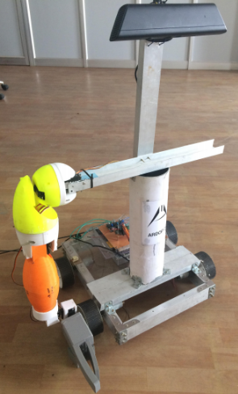
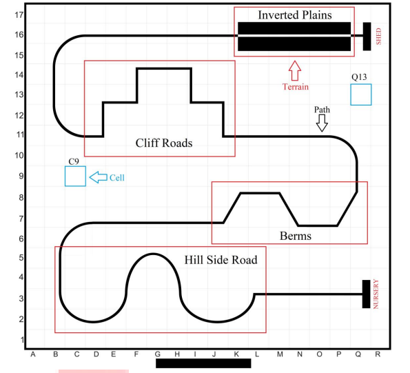

Projects
ARDOP Previous version

I started working on ARDOP towards the end of my second year of engineering (2018) at the Robotics and Embedded at BMS College of Engineering, this project introduced me to ROS (Robot Operating System).
I worked on the implementation of the ROS Navigation Stack for ARDOP and further contributed to the development of the speech-to-text and text-to-speech capabilities.
Planter Bot

Eyantra is a robotics competition hosted by IITB, for its 2017 edition it introduced the idea of "Planter Bot" to address the most preliminary and basic farming task of seedling and sapling plantation. The idea is to build a robot that can traverse the field with good accuracy in path detection with the aid of vision. The robot traverses a path having different Zones growing distinct types of plants. Each Zone has an associated requirement for seedlings of a particular kind to be planted. The robot plants the seedlings as per the requirement in each Zone which is simulated using image overlay. The team that finishes the given task in the least amount of time whilst incurring the least penalties is declared the WINNER.
Around 25000 students participated in the competition and our team were among the top 400 students to qualify teams for the pre-final stage
SERP:Swarm Embedded Robotic Platform
SERP is a low-cost miniature-sized differential drive robot intended to advance research in the domain of swarm robotics, it is a robot built using the Cortex M3 microcontroller. The robot is inspired by the Spark V Robot which has been jointly designed by NEX Robotics with the Department of Computer Science and Engineering, IIT Bombay. The project was conducted under the guidance of Professor Dr. Geetishree Mishra at BMS College of Engineering.
Introduction to Gravitational Waves & Detection Principles
Mathematics and theoretical physics have been very dear to me, to further feed my curiosity I completed the 100Hours Astronomy and Astrophysics Course at the M.P Birla Institute of Fundamental Research. Towards the end of the course I presented a dissertation titled Introduction to Gravitational Waves and Detection Principles, the presentation was a review of not only the science of gravitational wave generation and propagation but also the engineering behind its detection.
As a part of the course I also had the opportunity to visit the Gauribidanur Radio Observatory, these experiences have not only helped me gain an insight into astrophysics but also has helped me to understand and appreciate the engineering behind the detection of such faint signals.